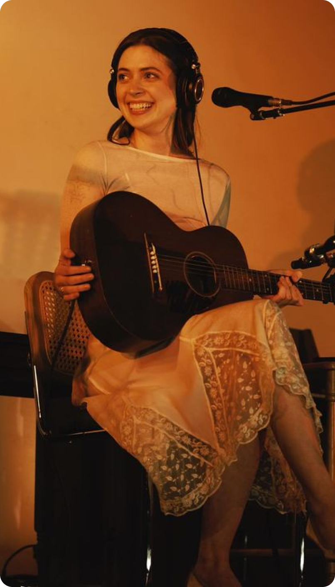

Artist biography
Lizzy McAlpine
Lizzy McAlpine is a singer-songwriter from Philadelphia, Pennsylvania, known for her intimate storytelling and expressive vocals. She began sharing music online while studying songwriting, building an audience with songs that pair vivid lyrics with understated, delicate arrangements.
Her writing often explores love, uncertainty, and the small details of everyday life. With a voice that can feel conversational one moment and soaring the next, Lizzy creates songs that draw listeners close and reward a little extra attention.
Her 2020 debut album, Give Me a Minute, introduced her thoughtful, folk-influenced sound. She reached a wider audience with Five Seconds Flat in 2022, a record full of vivid characters and carefully built stories, including the breakout song “ceilings.”
Songs like pages from a journal
In 2024, Lizzy released Older, an album about change, heartbreak, and learning to let go. Its reflective title track and layered production show a songwriter willing to sit with difficult feelings rather than rush toward easy answers.
Across her music, Lizzy balances delicate acoustic moments with adventurous arrangements and direct, personal lyrics. Her songs feel like pages from a journal—honest, carefully observed, and easy to return to as life changes.
